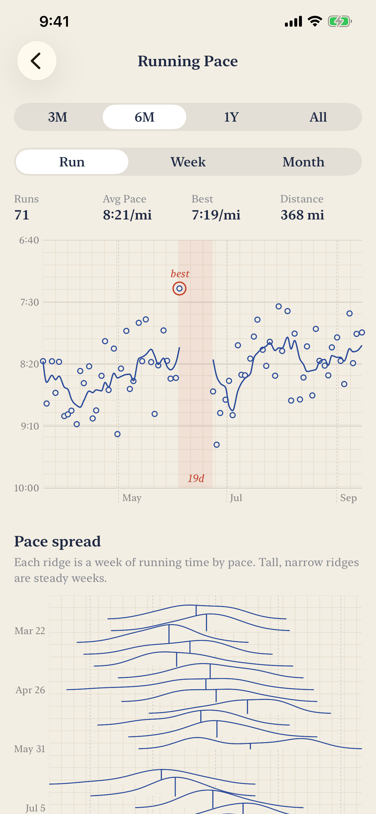
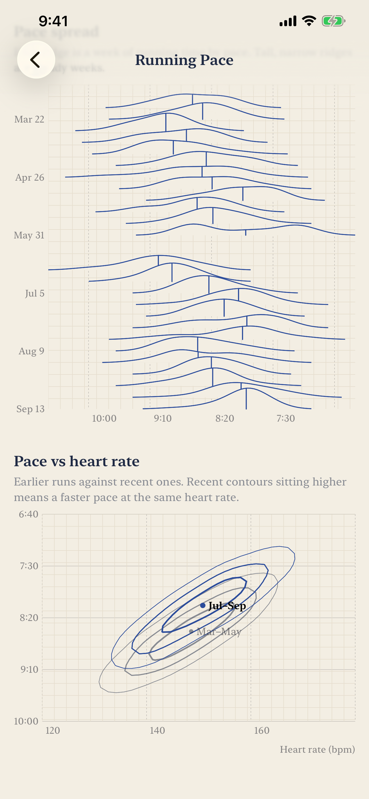
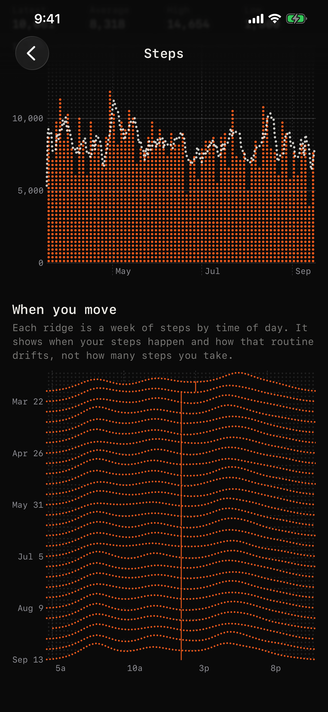
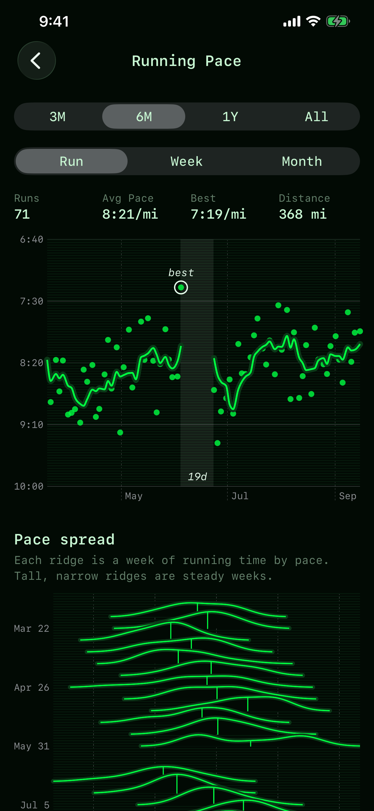

Health Science
Apple Health, actually charted. Health Science reads the years of data already on your iPhone and draws the charts the Health app won't — without an account, a server, or a single line of networking code.




What it draws
- Every run on one chart — three months, six months, a year or all of it, with faster runs higher up the axis. Your best run is circled, and breaks in training are marked rather than silently bridged.
- Pace spread, week by week — each week of running as a ridge, so a steady week looks different from a scattered one. An average can't show that.
- Pace against heart rate — this season's runs contoured against your earlier ones. When the recent contours sit higher, you are running faster at the same effort.
- Sleep and steps by clock time — when your nights and your movement actually happen, not just how much of each there was.
- Resting heart rate and weight — over any range, with trend lines that stop at gaps instead of guessing through them.
- Five looks, same data — blue ink on graph paper, a black instrument panel with orange dot-matrix readouts, elevation-tinted terrain, phosphor green, or the stock iOS look. Every chart renders in every theme.
- Private by construction — there is no networking code in the app. No account, no servers, no analytics, no third-party SDKs. Your health data is read on the device, drawn on the device, and goes nowhere else.
Coming to the App Store
Leave your email and we'll let you know the moment it goes live.
Requires iOS 17 or later. Charts are drawn from the categories you choose to share.